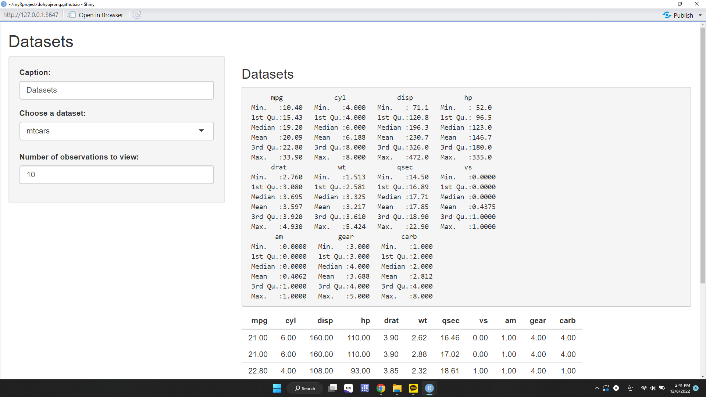

#Formatting page
# install.packages("shiny")
library("shiny")Assignment 6
Make Shiny App

Screengrab for Assignment 6 Shiny App
# First component: User interface (ui)
ui <- fluidPage (
tags$h1("Data Visualization App"),
tags$img(src = ""),
# tags$hr(),
# tags$br(),
tags$h1(strong("Dohyo Jeong")),
tags$p(em("School of Economic, Political and Policy Sciences")),
tags$a(em(href="https://utdallas.edu", "University of Texas at Dallas")),
tags$a(href="https://dohyojeong.github.io/", "Dohyo Jeong Homepage"))This version of 'bslib' is designed to work with 'rmarkdown' >= 2.7.
Please upgrade via install.packages('rmarkdown').# Second component: server
server <- function(input , output){}
# Calling the shinyapp
shinyApp(ui = ui , server = server)Shiny applications not supported in static R Markdown documents
#load datsets
data(mtcars)
data(USArrests)
data(uspop)# Define UI for dataset viewer app ----
ui <- fluidPage(
# App title ----
titlePanel("Datasets"),
# Sidebar layout with input and output definitions ----
sidebarLayout(
# Sidebar panel for inputs ----
sidebarPanel(
# Input: Text for providing a caption ----
# Note: Changes made to the caption in the textInput control
# are updated in the output area immediately as you type
textInput(inputId = "caption",
label = "Caption:",
value = "Datasets"),
# Input: Selector for choosing dataset ----
selectInput(inputId = "dataset",
label = "Choose a dataset:",
choices = c("mtcars", "USArrests","uspop")),
# Input: Numeric entry for number of obs to view ----
numericInput(inputId = "obs",
label = "Number of observations to view:",
min=0,
value = 10)
),
# Main panel for displaying outputs ----
mainPanel(
# Output: Formatted text for caption ----
h3(textOutput("caption", container = span)),
# Output: Verbatim text for data summary ----
verbatimTextOutput("summary"),
# Output: HTML table with requested number of observations ----
tableOutput("view")
)
)
)# Define server logic to summarize and view selected dataset ----
server <- function(input, output) {
# Return the requested dataset ----
# By declaring datasetInput as a reactive expression we ensure
# that:
#
# 1. It is only called when the inputs it depends on changes
# 2. The computation and result are shared by all the callers,
# i.e. it only executes a single time
datasetInput <- reactive({
switch(input$dataset,
"mtcars" = mtcars,
"US Arrests"= USArrests,
"US Population"= uspop)
})
# Create caption ----
# The output$caption is computed based on a reactive expression
# that returns input$caption. When the user changes the
# "caption" field:
#
# 1. This function is automatically called to recompute the output
# 2. New caption is pushed back to the browser for re-display
#
# Note that because the data-oriented reactive expressions
# below don't depend on input$caption, those expressions are
# NOT called when input$caption changes
output$caption <- renderText({
input$caption
})
# Generate a summary of the dataset ----
# The output$summary depends on the datasetInput reactive
# expression, so will be re-executed whenever datasetInput is
# invalidated, i.e. whenever the input$dataset changes
output$summary <- renderPrint({
dataset <- datasetInput()
summary(dataset)
})
# Show the first "n" observations ----
# The output$view depends on both the databaseInput reactive
# expression and input$obs, so it will be re-executed whenever
# input$dataset or input$obs is changed
output$view <- renderTable({
head(datasetInput(), n = input$obs)
})
}# Create Shiny app ----
shinyApp(ui, server)Shiny applications not supported in static R Markdown documents